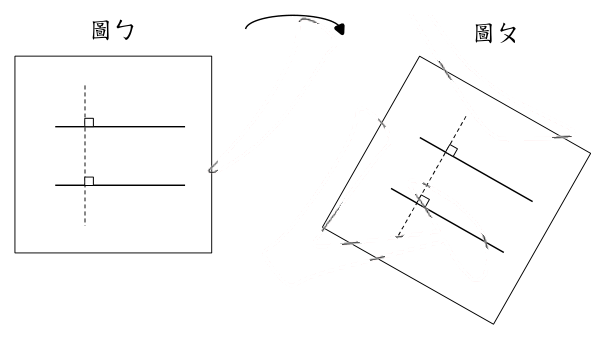
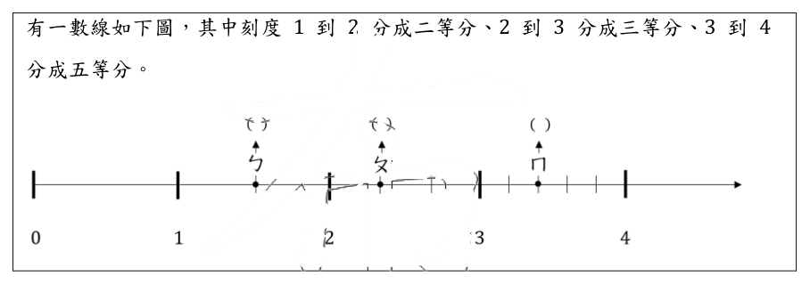
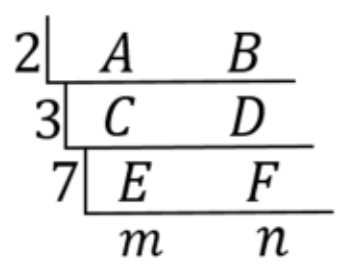
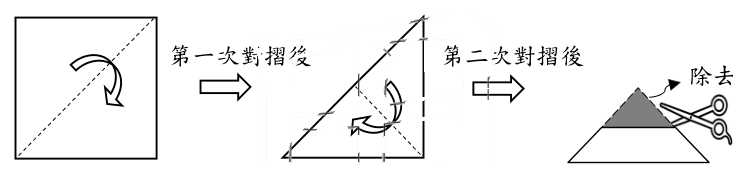
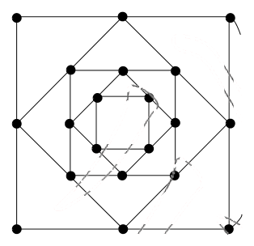
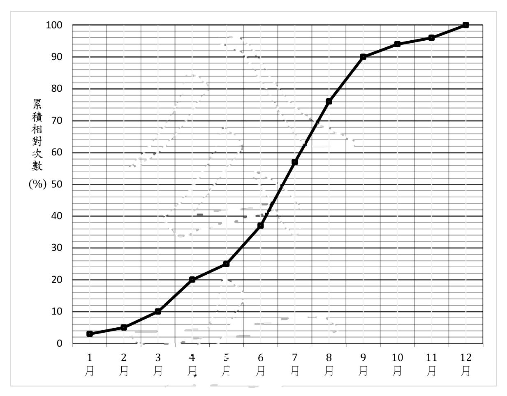

115 年教師檢定國小・數學能力測驗試題與答案
這一頁是民國 115 年教師檢定國小・數學能力測驗的整份歷屆試題，共 26 題，題目與標準答案出自教育部教師資格考試歷屆試題（受託國立臺灣師範大學心理與教育測驗研究發展中心），其中 26 題附有詳解。以下逐題列出題幹、選項與答案；要計時作答或記錄成績，請用線上練習。
教育部原始場次代碼：tqa11530
線上作答這一科 →
全部 26 題
第 1 題
有一數學問題：「水塔每分鐘注水 25 公升，需 1 小時注滿。若要 40 分鐘注滿，問每分鐘需注水多少公升？」此問題可以透過何種數量關係解題？
- （A）和不變
- （B）差不變
- （C）積不變
- （D）商不變
答案：（C）
詳解與考點
正解：本題描述的是反比關係中的「積不變」性質。水塔容量固定，等於「每分鐘注水量×注水時間」，此乘積為定值。原本每分鐘注水25公升、注滿需1小時即60分鐘，故水塔總容量為25×60=1500（公升）。若改為40分鐘注滿，則每分鐘所需注水量為1500÷40=37.5（公升）。在這個變化過程中，注水量增加、時間縮短，但兩者相乘的積（總容量1500公升）始終不變，正是「積不變」的數量關係，故選C。
A：和不變指兩量相加的結果為定值，本題的注水量與時間並非相加關係，題目也未給出兩量相加為定值的條件，不適用。
B：差不變指兩量相減的結果為定值，本題同樣沒有相減為定值的關係，不適用。
D：商不變指兩量相除的結果為定值，也就是兩量成正比、同增同減。本題注水量與時間恰為反比——時間縮短則注水量必須增加，兩者相除的商並非定值，故不適用；商不變常與積不變混淆，判準在於兩量是同向變動（正比、商不變）還是反向變動（反比、積不變）。
本題考點：和差積商四種「不變」關係的辨識。判準的關鍵在於先確認題目中兩個變動量的乘積或和、差、商何者維持定值：容量、總量等「總和固定、分兩因子相乘構成」的情境多屬積不變（反比關係）；速率與時間、單價與數量等常見組合亦同此理。
第 2 題
關於「時間加減計算」教學，有三個問題如下： 甲、某人 7 時出發，走 15 分鐘後到達公園，問他到達公園是幾時幾分？ 乙、某人 7 時 30 分出發，8 時 45 分走到公園，問他走路花了多少時間？ 丙、某人到公園要花 1 小時 15 分，若要在 9 時前到達公園，問他最晚應在何時出發？ 對於學童而言，這些問題由易到難的順序為何？
- （A）甲 → 乙 → 丙
- （B）甲 → 丙 → 乙
- （C）乙 → 丙 → 甲
- （D）丙 → 甲 → 乙
答案：（A）
詳解與考點
正解：三小題的難度取決於學童在解題時所需的心智運作方向與複雜度。甲已知出發時刻與經過時間，只需將兩者正向相加即可求得到達時刻（7時+15分=7時15分），是最直接、單向的計算，對學童而言最容易。乙已知出發時刻與到達時刻，須理解「經過時間＝到達時刻－出發時刻」，以相減方式求經過時間（8時45分－7時30分=1小時15分），需要學童具備時間區間的概念、並能拆解兩個時刻點之間的關係，難度高於甲的正向相加。丙已知經過時間與到達時限，須逆向推算「最晚出發時刻＝到達時限－經過時間」（9時－1小時15分），除了同樣涉及減法運算外，還常涉及跨時借位（9時須先視為8時60分才能與15分相減），且「最晚出發」屬條件式的逆向推理，對學童而言認知負荷最高。故由易到難依序為甲→乙→丙，選（A）。
B：（B）將丙排在乙之後、甲之前，把難度最高的逆向推算（丙）誤判為第二容易，忽略了丙同時涉及逆向思考與借位運算，難度應高於乙的單純相減。
C：（C）以乙為最容易起始，忽略了乙仍須理解「經過時間」的區間概念、進行時刻相減，其認知需求高於甲單純的正向相加。
D：（D）將丙列為最容易，完全顛倒了難度順序——丙所需的逆向推理與借位運算，對學童而言正是三題中最具挑戰性的部分，不可能是最容易的。
本題考點：時間計算教學中的問題難度排序。時間單元的三類典型問題依認知負荷遞增為：正向合成（已知起點與經過時間求終點）、區間推算（已知起訖兩點求經過時間）、逆向推算（已知經過時間與終點求起點，常涉及借位），教學設計應依此順序由易到難安排練習。
第 3 題
有兩位學童要比較棉花(20公克)與橡皮擦(30公克)的重量,其比較方法及結果如下: 甲、將棉花與橡皮擦放在天秤的兩邊比較,得出棉花比橡皮擦輕 乙、拿出鉛筆(25公克),將鉛筆與棉花放在天秤比較,再將鉛筆與橡皮擦放在天秤比較,得出棉花比橡皮擦輕 下列何者正確？
- （A）甲、乙都是直接比較
- （B）甲、乙都是間接比較
- （C）甲是直接比較、乙是間接比較
- （D）甲是間接比較、乙是直接比較
答案：（C）
詳解與考點
正解：直接比較是將兩個待比較的物體同時放在同一個比較工具（如天秤）上，直接呈現兩者的關係；間接比較則是借助第三個物體作為中介，分別與兩個待比較物體比較後，再推論出兩者的關係。甲同學將棉花與橡皮擦同時放上天秤兩端比較，兩物直接同秤對照，屬於直接比較；乙同學則拿出鉛筆，先比較鉛筆與棉花的輕重、再比較鉛筆與橡皮擦的輕重，透過鉛筆這個第三物間接推得棉花比橡皮擦輕，屬於間接比較。故甲是直接比較、乙是間接比較，答案為C。
A：甲、乙都是直接比較——此說法忽略了乙其實透過鉛筆作為中介物才完成比較，兩物（棉花與橡皮擦）自始至終未曾同時放上天秤，並不符合直接比較「兩物同秤」的定義。
B：甲、乙都是間接比較——此說法忽略了甲兩物同時放上天秤兩端互相對照，過程中並未借助任何第三物，應屬直接比較而非間接比較。
D：甲是間接比較、乙是直接比較——此選項將甲、乙的判斷完全對調，甲其實是直接比較、乙其實是間接比較，敘述方向相反，不正確。
本題考點：直接比較與間接比較（量與實測活動的基礎概念）。直接比較指待比較物同時並置比較；間接比較指借助第三物作為中介、分別比較後再推論關係；解題關鍵在辨識比較過程中是否引入了第三個物體作為橋樑。
第 4 題
關於「列聯表」教學，下列哪一種原始資料最適合？
- （A）某班的每週上課課表
- （B）某早餐店週日各品項的銷售金額
- （C）某班段考前五名學生各科的成績
- （D）某校各年級近視與沒有近視的人數
答案：（D）
詳解與考點
正解：列聯表（contingency table）用於同時呈現兩個類別變項（categorical variable）交叉組合下的次數分配。選項D「各年級」（一年級、二年級……）與「近視與否」（有、無）恰為兩個類別變項，交叉統計出各細格的人數，正是列聯表的典型應用，故選（D）。
A：某班的每週上課課表雖然同時涉及「星期」與「節次」兩個類別變項，但每一格填入的是固定的科目名稱，屬於排課內容的對照表，而非「計數某類別組合出現次數」的資料，不適合作為列聯表教學的原始資料。
B：某早餐店週日各品項的銷售金額，只有「品項」一個類別變項，對應的是「金額」此一連續數值，並非兩個類別變項的交叉次數，適合以長條圖呈現。
C：某班段考前五名學生各科的成績，是「學生」與「科目」兩個類別變項對應「分數」此一連續數值，同樣不是次數性質的交叉資料，不適合以列聯表呈現。
本題考點：列聯表（contingency table）的定義與適用資料型態。列聯表用於呈現兩個類別變項交叉組合下的「次數」分配，關鍵判準有二：一是變項須為類別變項而非連續數值，二是細格內容須為計數的次數而非其他屬性值（如科目名稱、金額、分數）。
第 5 題
教師將一個不規則物體放入一個邊長為 10 公分的正方體容器且完全沒入水中,結果水位高度由 5 公分上升至 8 公分。教師問:「這個物體的體積是多少立方公分?」某學童回答:「水位上升的高度就是這個物體的體積。」根據此學童的迷思概念,下列哪一個最可能是他的答案?
- （A）3
- （B）300
- （C）500
- （D）800
答案：（A）
詳解與考點
正解：物體體積的正確算法，是以水位上升的高度乘以容器的底面積，即（8-5）公分×10公分×10公分＝3×100=300立方公分。但題幹描述的學童存在「水位上升的高度就是這個物體的體積」這項迷思概念，也就是把「上升的高度」直接誤認為「體積」本身，未曾將高度乘以底面積這一步驟納入計算。依此迷思推算，該學童會直接以水位上升的高度數值作答，即 8-5=3，答案選（A）。
B：300 其實是本題正確的體積數值（3×10×10），但要得出這個答案，學童必須先具備「體積＝上升高度×底面積」的完整概念，這正是題幹所描述迷思學童所欠缺的認知，故300並非該迷思學童的答案，屬於正確解法而非誤答的產物。
C：500 若以「上升前水位5公分」為底，乘以底面積 10×10 可得 500，這是誤將原始水位高度（而非上升的高度）當作體積計算的基礎，屬於另一種計算錯誤路徑，與題幹所述「把上升高度當體積」的迷思不同，並非本題設定的迷思答案。
D：800 若以「上升後水位8公分」為底，乘以底面積 10×10 可得 800，這同樣是誤將水位的最終高度（而非上升的高度差）當作體積計算基礎所致，與題幹所述迷思的成因不同，屬於另一種常見誤算類型。
本題考點：體積測量中的「排水法」（水位變化推算不規則物體體積）及常見迷思概念診斷。正確原理是物體體積等於其排開水的體積，須以水位上升的高度乘以容器底面積求得；常見迷思是學童只注意到「高度」這個一維量的變化，忽略了必須乘以底面積才能得到體積這個三維量，解題時應先辨明題幹要求的是「迷思學童會怎麼算」而非「正確答案為何」。
第 6 題
教師將 95 顆黑色及 5 顆白色相同的球,放入一個黑箱裡。教師想請小明從箱子裡任意抽出 1 顆球,並設計三個提問如下: 甲、小明抽中白球的機率是多少? 乙、小明可能抽中紅球嗎? 丙、小明抽中白球比黑球的可能性高嗎? 上述哪些提問適合在國小階段進行「可能性」的教學?
- （A）只有甲
- （B）只有甲、丙
- （C）只有乙、丙
- （D）甲、乙、丙
答案：（C）
詳解與考點
正解：國小階段「可能性」單元的教學重點，在協助學童以質性方式判斷事件發生的可能程度（一定發生、可能發生、不可能發生，以及比較可能性的高低），而非要求學童計算精確的機率數值。乙「小明可能抽中紅球嗎？」因箱中僅有黑球與白球、未放入紅球，學童只需判斷此為不可能發生的事件，屬於質性的可能性判斷，適合此階段教學；丙「小明抽中白球比黑球的可能性高嗎？」學童只需比較白球（5顆）與黑球（95顆）的數量多寡，即可判斷抽中黑球的可能性較高、白球較低，同樣不需計算精確機率值，屬質性比較。故適合國小階段可能性教學的提問為乙、丙，選（C）。
A（只有甲）：甲「小明抽中白球的機率是多少？」要求學童求出抽中白球的精確機率數值（5/100），此涉及部分與全體的比值計算，已超出國小「可能性」單元著重質性判斷的教學目標，屬國中機率單元才正式處理的量化計算，故甲不適合，（A）不成立。
B（只有甲、丙）：丙屬適合的質性比較提問，判斷正確；但甲要求計算精確機率值，超出國小可能性教學的質性判斷範疇，並不適合，混入甲丙組合會使選項失準，故（B）不成立。
D（甲、乙、丙）：乙、丙皆屬適合的質性判斷提問；但甲同樣因涉及精確機率的量化計算而不適合國小階段的可能性教學，將甲一併納入會使選項失準，故（D）不成立。
本題考點：國小數學「可能性」單元的教學定位。國小階段的可能性教學著重於質性判斷（一定、可能、不可能，以及可能性高低的比較），尚不要求學童進行精確的機率數值計算；量化的機率計算屬於國中機率單元的學習範疇，解題關鍵在辨別題項要求的是「質性判斷」還是「精確數值計算」。
第 7 題
關於「平行四邊形面積公式」教學,教師提供每位學童一張平行四邊形的圖卡,請學童剪一刀,再重組為長方形。以下為四位學童的切割方法: 哪些學童的切割方法可以重組成長方形?
- （A）只有丙
- （B）只有乙、丙
- （C）只有甲、乙、丙
- （D）甲、乙、丙、丁
答案：（B）
詳解與考點
正解：平行四邊形要以一刀剪開後重組成長方形，關鍵在於剪裁線必須是垂直於底邊的高：沿高剪下之後，把剪下的部分搬移到平行四邊形的另一側，才能與原圖形互補出四個直角，重組成長方形；若剪裁線不是垂直於底邊的高，兩個切面拼接處就無法形成直角，自然無法重組成長方形。依此判準，四位學童中只有乙、丙兩人的剪裁線是沿著垂直於底邊的高剪下，重組後能成為長方形，故選（B）。
A：只認定丙符合沿高剪裁的條件，漏掉了同樣沿高剪裁、也能重組成長方形的乙，判斷時可能只驗證了其中一位學童的剪法，未逐一檢查每位學童的剪裁線是否垂直底邊。
C：多算入甲，但甲的剪裁線並未沿著垂直於底邊的高剪下，拼接處無法構成直角，重組後不會是長方形，誤把「剪一刀、能移動拼接」直接等同於「能拼成長方形」，而忽略了剪裁線角度必須垂直於底邊這項必要條件。
D：認為四位學童的剪法皆可重組成長方形，同樣忽略了剪裁線是否垂直底邊的判準，把「剪一刀後重新拼接」與「拼接後恰為長方形的四個直角」混為一談。
本題考點：平行四邊形與長方形等積變形的操作性原理。平行四邊形沿垂直於底邊的高剪開、移補後可重組成長方形，這是底乘高等於面積公式教學中常用的操作性驗證；判斷剪裁法是否有效的關鍵，在於剪裁線是否垂直於底邊，而非只看是否剪成兩塊可搬移的圖形。
第 8 題
教師在紙張上畫出兩條實線及一條虛線(如圖勺), 問學童這兩條(實)線的關係為何? 學童回答:「這兩條線互相平行。」接著, 教師將這張紙轉動後如圖夂, 指著這兩條(實)線, 問學童它們的關係為何? 圖勺 圖夂 針對此教師轉動紙張的目的, 兩位師資生的說法如下: 甲、檢驗學童對兩平行線關係的保留概念 乙、協助學童理解兩平行線間的距離概念 哪些師資生的說法合理?

- （A）只有甲合理
- （B）只有乙合理
- （C）甲、乙都合理
- （D）甲、乙都不合理
答案：（A）
詳解與考點
正解：教師將紙張轉動後，針對同一組實線再次提問其關係，目的在檢驗學童是否仍能正確辨識「這兩條線互相平行」這項幾何關係，不因紙張方向（視覺呈現角度）改變而動搖判斷，也就是檢驗學童對「平行關係」是否具有保留概念（conservation）——平行是線與線之間內在、不隨參照方向改變的性質，若學童僅因紙張轉動、線的視覺走向改變便誤判兩線不再平行，即表示尚未建立此保留概念。此說法對應甲，甲合理；乙主張轉動紙張是為了協助學童理解兩平行線間的距離概念，但活動全程僅要求學童重新判斷「這兩條線的關係」，並未引導學童測量、比較或討論兩線之間的間距，與「距離」這項度量概念無關，乙不合理。故只有甲合理，選（A）。
B：（B）主張「只有乙合理」，等於認定乙成立而甲不成立；然而乙所稱的「距離概念」在活動中並無測量或比較間距的操作可對應，甲所稱的「保留概念檢驗」才是轉動紙張這項動作直接對應的教學目的，故B將甲乙的合理性判斷反了，不成立。
C：（C）主張「甲、乙都合理」，高估了乙的合理性——活動設計中並未出現任何與兩線間距有關的引導，乙缺乏活動內容的支持，故不能與甲並列為合理，C不成立。
D：（D）主張「甲、乙都不合理」，低估了甲的合理性——檢驗學童對平行關係是否具保留概念，正是轉動紙張、重複提問同一組線之關係這項教學動作最直接對應的目的，甲應屬合理，故D不成立。
本題考點：幾何概念教學中的保留概念（conservation）檢驗與教學活動設計目的的判讀。皮亞傑（J. Piaget）保留概念指物體的某項性質不因外觀（形狀、方向、排列）改變而改變；教師刻意改變視覺呈現方式（轉動紙張）並重複提問同一關係，是用來檢驗學童是否已脫離「以視覺表象判斷」、建立起穩定關係概念的典型手法，須與涉及測量、比較的「距離」概念相區辨。
第 9 題
關於「個別單位測量」教學, 教師請學童測量布告欄的面積。有兩位學童的方法如下: 甲、利用故事書的長邊與短邊, 量出布告欄的「長邊與 7 本書的長邊總和一樣長」、「短邊與 3 本書的短邊總和一樣長」, 所以布告欄的面積是 \(7 \times 3 = 21\) 本書的大小 乙、利用 A4 紙的長邊, 量出布告欄的「長邊與 9 張紙的長邊總和一樣長」、「短邊與 3 張紙的長邊總和一樣長」, 所以布告欄的面積是 \(9 \times 3 = 27\) 張紙的大小 下列何者正確?
- （A）甲對、乙錯
- （B）甲錯、乙對
- （C）甲、乙都對
- （D）甲、乙都錯
答案：（A）
詳解與考點
正解：以個別單位測量二維面積時，須讓單位物件的「長邊」對應布告欄長邊方向丈量、「短邊」對應布告欄短邊方向丈量，也就是用單位物件互相垂直的兩個邊長分別對應兩個垂直方向，才能正確密鋪並算出面積。甲同學以故事書「長邊」丈量布告欄長邊（得7本）、以故事書「短邊」丈量布告欄短邊（得3本），兩個丈量方向分別對應單位物件的相異邊長，符合面積密鋪原理，7×3=21本書大小的計算有效，判斷正確。乙同學以A4紙「長邊」丈量布告欄長邊（得9張）並無問題，但丈量短邊時仍使用紙的「長邊」去對應（而非改用紙的短邊），也就是同一單位物件的「同一邊長」被用在兩個互相垂直的方向上，不符合「兩方向須對應單位物件相異邊長」的密鋪原則，其9×3=27張紙的計算並非有效的面積量測。故甲對、乙錯，選（A）。
B（甲錯乙對）：與判斷相反，甲的丈量方式其實符合密鋪原則，乙才是丈量短邊時邊長選用錯誤，故B不成立。
C（甲乙都對）：忽略了乙同學丈量短邊時仍使用A4紙的「長邊」而非「短邊」，未察覺同一邊長被重複用於兩個垂直方向的錯誤，故C不成立。
D（甲乙都錯）：誤將甲同學正確使用「長邊對長邊、短邊對短邊」的丈量方式也判為錯誤，忽略甲的操作完全符合個別單位密鋪面積的原理，故D不成立。
本題考點：個別單位（non-standard unit）測量面積的原理。核心概念是二維面積測量須以單位物件的兩個互相垂直的邊長，分別對應待測物件的長邊與短邊方向進行密鋪計數；若誤用單位物件的同一邊長對應兩個垂直方向，所得數值不具面積量測的意義。
第 10 題
兩位學童解兩步驟問題的計算過程如下: \[ \text{小平} : 100 - 20 + 10 = 100 - 30 = 70 \] \[ \text{安安} : 16 + 4 \times 1 = 20 \times 1 = 20 \] 有兩種算則如下： 甲、只有加減時，從左到右計算 乙、有加減和乘除時，先乘除後加減 根據兩位學童的計算過程，下列何者正確？
- （A）小平有遵循甲、安安有遵循乙
- （B）小平有遵循甲、安安未遵循乙
- （C）小平未遵循甲、安安有遵循乙
- （D）小平未遵循甲、安安未遵循乙
答案：（D）
詳解與考點
正解：判斷兩位學童是否分別遵循甲（只有加減時，從左到右計算）與乙（有加減和乘除時，先乘除後加減）兩項運算規則，須逐步檢視其計算過程。小平計算100-20+10：依甲原則應從左到右依序計算，先算100-20=80，再算80+10=90；但小平寫成「100-20+10=100-30=70」，是先把20與10相加成30，再用100減去30，並非由左而右依序運算，故小平未遵循甲。安安計算16+4×1：依乙原則應先乘除後加減，先算4×1=4，再算16+4=20；但安安寫成「16+4×1=20×1=20」，是先把16與4相加成20，才乘以1，運算歷程並未先算乘法，只是恰好因為乘以1不改變數值，最終答案20仍與正解相同，但過程本身仍是先加後乘，並未遵循乙。兩人皆未依規則計算，正確答案為（D）小平未遵循甲、安安未遵循乙。
A：（A）「小平有遵循甲、安安有遵循乙」誤判了兩人的運算過程──小平的「100-30」是先做加法（20+10）再做減法，並非由左而右逐步運算；安安的「20×1」則是先做加法（16+4）才做乘法，兩人皆未依各自規則計算，此選項對兩人的判斷皆有誤。
B：（B）「小平有遵循甲、安安未遵循乙」誤判了小平的部分──小平的計算過程明顯是先將20、10相加再相減，與甲「由左而右」的規則不符，此選項僅正確判斷安安卻誤判小平。
C：（C）「小平未遵循甲、安安有遵循乙」誤判了安安的部分──安安雖然最終答案20恰好正確，但這是因為乘以1不影響數值的巧合，其運算歷程（16+4在先、×1在後）並未先乘除後加減，僅看答案數值而忽略運算歷程順序，是常見的誤判陷阱。
本題考點：四則運算規則的歷程判斷，須區辨「答案是否正確」與「歷程是否遵循規則」兩個不同層次──尤其當運算中出現乘以1或加0等不影響數值的特例時，僅看最終答案容易誤判學童是否真正掌握運算規則，須逐步檢視每一步驟的運算順序。
第 11 題
數線評量試題的題幹如下： 有一數線如下圖，其中刻度 1 到 2 分成二等分、2 到 3 分成三等分、3 到 4 分成五等分。 在國小階段，下列哪些問題適合作為評量試題？ 甲、在勺點標出分數 乙、在夂點標出小數 丙、在冂點標出小數

- （A）只有甲
- （B）只有甲、乙
- （C）只有甲、丙
- （D）甲、乙、丙
答案：（C）
詳解與考點
正解：判斷數線評量是否適切，要看等分點能否以國小階段的分數或有限小數精確表示。1到2分成2等分、2到3分成3等分、3到4分成5等分。甲以分數標示，各等分點均可精確表示；丙所在的5等分可寫成3.2、3.4等有限小數；乙所在的3等分如2又1/3=2.333…，非有限小數，故只有甲、丙適切，選C。
A：（A）漏列丙；五分之幾可轉為有限小數。
B：（B）把乙列入，但三等分所生的小數為循環小數，不適合作為此處要求精確標示小數的題目。
D：（D）同樣誤把乙列入，忽略分母3不能化為有限小數。
本題考點：分數與有限小數；最簡分母只含2與5的質因數時可化有限小數，分母含3時通常形成循環小數。
第 12 題
關於「圓形圖」教學，教師提供六年級學童最喜歡的運動項目數據：籃球 38 人，躲避球 18 人，羽球 24 人。有四組學童根據這些數據繪製的圓形圖如下： 教學後，教師想將圓形圖貼在學校的公布欄，哪些圓形圖可以讓六年級學童理解最喜歡的運動項目分布？
- （A）只有甲
- （B）只有甲、乙
- （C）只有甲、丙
- （D）只有乙、丁
答案：（C）
詳解與考點
正解：判斷圓形圖是否能讓六年級學童理解「最喜歡的運動項目分布」，關鍵在於圖形是否同時符合兩項條件：其一，扇形角度（或面積）須確實依各類別實際比例繪製；其二，圖上須有清楚的類別名稱與數值或百分比標示，讓學童不需額外換算就能讀出資訊。本題資料為籃球 38 人、躲避球 18 人、羽球 24 人，合計 80 人，比例約為 47.5%、22.5%、30%。依題目所附四組圓形圖逐一檢核，僅甲、丙兩圖同時符合上述兩項條件，故選（C）。
A：（A）「只有甲」遺漏了同樣符合條件的丙圖，判斷範圍過於保守。
B：（B）「只有甲、乙」誤將乙圖也視為合格，但乙圖之扇形角度與實際人數比例有落差（未依比例正確繪製），容易讓學童誤判各運動項目人數相近或比例失真，故不適合。
D：（D）「只有乙、丁」所指的乙、丁兩圖皆有缺陷，例如角度與比例不符、或以立體造型繪製造成視覺扭曲、圖例與扇形顏色未確實對應等，皆會妨礙學童正確讀取資料，故不適合公布欄教學使用。
本題考點：統計圖表（圓形圖）教學素材的適切性判準。選用教學用圖表時，「比例正確」與「標示清楚」須優先於單純的視覺美觀或造型變化；常見的失真來源包括扇形角度未依實際比例繪製、以立體效果扭曲面積觀感、圖例與資料未確實對應等，教師選用前應逐一檢核。
第 13 題
教師請學童「判斷兩個圖形是否為扇形」, 其中有兩位學童的說法和做法如下: 甲、我在勾圖的曲線上找出一個點 P, 畫出一條線 \(\overline{OP}\), 發現 \(\overline{OP}\) 比 \(\overline{OA}\) 長, 所以不是扇形 乙、我在夕圖的曲線上找出一個點 Q, 畫出一條線 \(\overline{OQ}\), 發現 \(\overline{OQ}\) 和 \(\overline{OA}\) 一樣長, 所以是扇形 哪些學童的說法可以作為「判斷圖形是否為扇形」的依據?
- （A）只有甲可以
- （B）只有乙可以
- （C）甲、乙都可以
- （D）甲、乙都不可以
答案：（A）
詳解與考點
正解：判斷一圖形是否為扇形，關鍵在於其曲線是否為以圓心O為中心、半徑處處相等的圓弧，亦即曲線上任一點到O的距離都須等於直邊OA的長度。甲同學在勾圖曲線上找一點P，畫出OP，發現OP比OA長，即已找到曲線上至少一點到圓心的距離不等於OA，足以推翻「曲線上每一點到圓心等距」的要求，是有效的反例論證，可據以判斷勾圖不是扇形；乙同學在夕圖曲線上只驗證了一點Q與OA等長，便判斷夕圖是扇形，但這無法保證曲線上其他點也都與OA等長，屬於以個案取代全稱驗證的邏輯跳躍，不能作為判斷依據。因此只有甲的說法可以作為依據，選（A）。
B：（B）只有乙可以，等於認定甲不可作為依據、乙才可以，兩點都與事實相反——甲以反例推翻等距要求，本屬有效的判斷法；乙僅驗證單一點便下結論「是」，才是不成立的證法，B選項的認定方向整個顛倒。
C：（C）甲乙都可以，錯誤在於誤將乙的做法也視為有效——乙只取曲線上一點驗證其與OA等長，便斷言整條曲線都是以O為圓心的圓弧，這是以個案代替全稱命題的邏輯跳躍，無法排除曲線在其他位置偏離半徑的可能。
D：（D）甲乙都不可以，錯誤在於連甲的做法也一併否定——甲找到一個OP不等於OA的反例，此反例已足以推翻「勾圖是扇形」的宣稱，正是幾何證明中「舉反例證偽」的正當方法，並非不能使用。
本題考點：扇形（sector）的定義——曲線須為以圓心為中心、半徑處處相等的圓弧；反例證偽法（單一反例即可推翻全稱命題）與個案驗證法（單一相符案例無法證明全稱命題成立）的邏輯區辨。
第 14 題
把兩塊相同體積的黏土, 各捏成一個三角柱和一個圓柱。若三角柱的底面積為 \(a\), 高為 18, 圓柱體的高為 9, 則圓柱體底面圓形的半徑為何?
- （A）\(\sqrt{\frac{\pi}{2a}}\)
- （B）\(\sqrt{\frac{2\pi}{a}}\)
- （C）\(\sqrt{\frac{a}{2\pi}}\)
- （D）\(\sqrt{\frac{2a}{\pi}}\)
答案：（D）
詳解與考點
正解：兩塊黏土體積相同，故三角柱體積等於圓柱體積。三角柱體積＝底面積×高＝a×18=18a。圓柱體積＝π×半徑²×高＝π×r²×9。令兩體積相等：18a=9πr²，兩邊同除以9π，得r²＝18a÷9π＝2a/π，故r＝√(2a/π)，選D。
A：√(π/2a)是把正確結果r²＝2a/π的分子分母上下顛倒，誤植為π/2a所致。
B：√(2π/a)是把算式中a與π的位置互換所致——正確應為2a/π，此選項誤把2a/π寫成2π/a，等於把分子與分母的角色對調。
C：√(a/2π)是把三角柱與圓柱的高18與9互相對調代入所致：若誤以三角柱高為9、圓柱高為18，則列式變成9a=18πr²，解得r²＝9a÷18π＝a/2π，即得此誤答。
本題考點：等體積換算下的柱體體積公式運用。三角柱體積＝底面積×高，圓柱體積＝π×半徑²×高；解題關鍵是正確代入哪個是底面積、哪個是高，並在等式兩邊同除、開根號時保持分子分母對應關係不誤植。
第 15 題
當函數 \(f(x) = (x+2)^2 + 2\) 的圖形向右移 2 個單位, 向下移 2 個單位之後, 會與 \(g(x) = 0\) 的根, 下列何者正確?
- （A）無根
- （B）0, 4
- （C）只有 0
- （D）只有 4
答案：（C）
詳解與考點
正解：函數平移的操作原則是：「向右移a」以(x-a)取代原式中的x；「向下移b」則是將整個函數值再減去b。原函數f(x)=(x+2)²+2。先做「向右移2」：以(x-2)取代x，得f(x-2)=((x-2)+2)²+2=x²+2。再做「向下移2」：整個函數值再減2，得到平移後的函數g(x)=x²+2-2=x²。令g(x)=0，即x²=0，解得x=0（重根），故平移後的圖形只在x=0這一點與x軸相交，答案為（C）「只有0」。
A：（A）「無根」的錯誤在於漏做「向下移2」這一步。若只完成向右移2，會停留在x²+2=0，此式左邊恆≥2、恆為正，方程式無實數解，因而誤判為無根；但題目要求右移「且」下移都完成，漏掉下移這一步就會得出錯誤的無根結論。
B：（B）「0, 4」是把兩種不同計算歷程的結果混在一起：一部分正確算出重根x=0；另一部分則是誤將「向右移2」操作成向左移（以(x+2)取代x），算出(x+4)²=0得x=-4，又把負號看漏而誤植為「4」，再把這個錯誤來源的數值與正確的0一併列出，因而同時保留了0與4兩個答案；但正確計算下平移後的函數只有x=0這一個（二重）根，不應再多列其他根。
D：（D）「只有4」的錯誤源於把左右平移的方向弄反：若誤將「向右移2」操作成以(x+2)取代x（這其實是向左移2個單位的做法），會得到((x+2)+2)²+2=(x+4)²+2，再下移2得(x+4)²=0，解得x=-4；若再把負號看漏，就會誤寫成「4」，這是「平移方向弄反」加上「漏看負號」兩層錯誤疊加而成。
本題考點：二次函數圖形的平移規則與方程式求根。核心是「左右平移看x的正負號方向（向右移a用x-a、向左移a用x+a）、上下平移直接對函數值加減」，並須留意平移後方程式可能只有一個重根而非兩個相異根；本題易錯在漏做其中一步平移，或把左右平移方向弄反。
第 16 題
已知一等差數列為 {2, 4, 6, 8, 10, 12, ..., 2n, ...}, n 為正整數。此數列包含一個新的等差數列 {4, 8, 12, ..., 4k, ...}, k 為正整數。原數列的第 200 項與新數列的第 100 項相差為何?
- （A）600
- （B）200
- （C）100
- （D）0
答案：（D）
詳解與考點
正解：原數列為 {2, 4, 6, …, 2n, …}，通項為 a_n = 2n，故第 200 項為 a_200 = 2 × 200 = 400。新數列為 {4, 8, 12, …, 4k, …}，通項為 b_k = 4k，故第 100 項為 b_100 = 4 × 100 = 400。事實上，因為 4k = 2 × (2k)，新數列的第 k 項恰等於原數列的第 2k 項，所以新數列第 100 項就是原數列第 200 項本身（b_100 = a_200，兩者皆為 400），兩數相差自然為 0，故選（D）。
B：（B）「200」的錯誤在於算新數列第 100 項時，誤用了原數列的公式 2n 而非新數列自己的公式 4k，得到 2 × 100 = 200，再拿它與原數列第 200 項的 400 相減，得到 400 − 200 = 200，這是套錯公式所致的錯誤。
C：（C）「100」的錯誤在於誤把「兩項的差」算成「兩個項數（位置）之差」，也就是直接算 200 − 100 = 100，卻沒有先把各自的項數代入通項公式求出實際的項值，就把項數本身的差當成答案。
A：（A）「600」是延續（B）的錯誤再疊加一次──先如（B）般誤算出新數列第 100 項為 200，再把應該做「相減」的「相差」誤做成「相加」，即 400 + 200 = 600，兩個錯誤疊加所致。
本題考點：等差數列通項公式的建立與代入計算，以及子數列與原數列對應項數關係的判讀（本題新數列第 k 項恰為原數列第 2k 項）；作答時務必先分別代入各自正確的通項公式求出實際項值，再進行比較或運算，避免混用公式或誤把項數差當成項值差。
第 17 題
將邊長為 10 的正方形紙片，縱向與橫向各裁切一刀，形成 4 個矩形，其中有兩個是正方形。若兩個正方形的面積和為 58，則其面積相差多少？
- （A）20
- （B）40
- （C）60
- （D）80
答案：（B）
詳解與考點
正解：設兩正方形邊長分別為x、y。由於同一張正方形紙片縱橫各裁一刀形成兩個正方形，兩正方形邊長之和恰等於紙片邊長，即x+y=10。已知兩正方形面積和為58，即x²+y²=58。利用完全平方公式(x+y)²=x²+2xy+y²，代入得100=58+2xy，解得2xy=42，xy=21。再利用(x−y)²=x²−2xy+y²=58−42=16，解得|x−y|=4。兩正方形面積相差為|x²−y²|=|x−y|×(x+y)=4×10=40，故選項B正確。驗算：解x+y=10、xy=21可得x、y分別為3與7，面積分別為9與49，兩者和為58、差為40，與題目條件吻合。
A：（A）20的錯誤在於求出邊長差4之後，誤將面積差算成「邊長差×兩邊長的平均值5」（即10的一半），而非「邊長差×兩邊長之和10」，得到4×5=20，漏乘了一倍。
C：（C）60的錯誤在於把題目所給的「面積和58」誤看成「68」代入計算：此時xy=16，(x−y)²=68−32=36，|x−y|=6，對應x、y為2與8，面積差為64−4=60，數字看似合理，實為誤植總和所致。
D：（D）80的錯誤在於把邊長差4與邊長和10相乘、正確得到40之後，又重複計算一次x²−y²與y²−x²並將兩者相加，誤以為兩者是應分別計入的不同值，導致40+40=80的雙倍錯誤。
本題考點：相似圖形裁切問題中「和差積」關係式的運用，即由(x+y)²與(x−y)²之間的代數恆等式求出邊長差，再以「差×和＝平方差」求出面積相差；核心是熟練x²+y²、xy、(x±y)²三者間的代數轉換技巧。
第 18 題
利用短除法解 A、B 兩數的最大公因數，計算過程如下： 已知 44 是 A 的因數, 26 是 B 的因數, 問 m+n 的最小值為何?

- （A）24
- （B）35
- （C）57
- （D）70
答案：（B）
詳解與考點
正解：短除法求兩數最大公因數時，逐次除以共同質因數，直到最後所得的兩個商互質為止；由計算過程可知，A、B依序被2、3、7除盡，故A=2×3×7×m=42m，B=2×3×7×n=42n，其中m、n互質。已知44是A的因數，即44整除42m；44=2²×11，42=2×3×7，故42m÷44=21m÷22，須22整除21m；因21與22互質，故22必整除m，m的最小值為22。已知26是B的因數，即26整除42n；26=2×13，故42n÷26=21n÷13，須13整除21n；因21與13互質，故13必整除n，n的最小值為13。驗證22與13互質，符合短除法終止條件。故m+n的最小值為22+13=35，選（B）。
A：（A）24=11+13，是把44=2²×11只當成11的倍數，忽略42m只提供了一個2、還缺一個2才能湊足2²，因而誤取m的最小值為11，屬於漏算44中平方因子2²的計算錯誤。
C：（C）57=44+13，是誤以為44必須直接整除m本身（而非整除42m這個乘積），因而把m的最小值直接取為44，忽略了42本身已提供2、3、7這些公因數、可以分擔44的部分因數。
D：（D）70=44+26，是完全跳過短除法「A=42m、B=42n」的乘積關係，直接將題目給定的44與26相加，或誤把m、n直接等同於44、26本身，未進行任何因數分解與整除判斷。
本題考點：短除法（successive division）求最大公因數的原理與應用。相同的公因數（本題為2、3、7）連乘即為最大公因數，兩數各自表示為「最大公因數×互質商」；當題目改為已知某數整除A（或B）反推商的最小值時，須將已知數分解質因數，扣除最大公因數已提供的部分後，判斷「還缺的因數」必須由商補足，而非直接套用已知數本身。
第 19 題
一張邊長為 10 的正方形色紙，依序沿對角線對摺再對摺後，形成等腰三角形；再沿兩腰中點連線剪斷後，移除上半部三角形(如圖)。問剩下的色紙展開後的面積為何？

- （A）75
- （B）50
- （C）25
- （D）\(\frac{200}{3}\)
答案：（A）
詳解與考點
正解：正方形色紙邊長10，面積為10×10=100。第一次沿對角線對摺：把正方形對摺成兩股皆為10的等腰直角三角形，此時紙張為2層疊合，攤平前的面積為100÷2=50。第二次沿此三角形的對稱軸（頂角平分線，同時也是斜邊上的中垂線）再對摺一次：因對稱軸將三角形均分為兩個全等的小三角形，面積再減半為50÷2=25，此時紙張已是4層疊合。這個最終小三角形是等腰直角三角形，其兩腰各長5√2、斜邊長10。取這兩腰的中點連線剪斷，並移除含頂角（兩腰交會處）的上半部小三角形：中點連線把原三角形切出一個與原三角形相似、相似比為1/2的小三角形，其面積為原三角形的(1/2)²＝1/4，即25×1/4=6.25；但這一刀同時剪穿4層紙，故展開後實際被剪掉的面積為6.25×4=25。因此展開後剩下的面積為100-25=75，對應選項A。驗算：只要相似比為1/2，剪掉部分展開後占全部原正方形面積的25/100=1/4，保留75/100=3/4，與100-25=75一致。
B：（B）50誤把「中點連線」看成能把面積剪去一半，即誤設每層被剪掉的比例為1/2而非正確的1/4，算成25×1/2×4=50，剩下100-50=50，錯在混淆了「中點連線」對應的相似比是邊長比1/2、而非面積比1/2。
C：（C）25把兩次對摺後、尚未剪裁前的最終小三角形面積（100×1/2×1/2=25）直接當成剪裁後展開的答案，完全忽略了剪去上半部三角形這一步驟對面積的影響。
D：（D）200/3是相似比或層數換算出錯所致的誤算（例如誤用1/3而非正確的1/4作為被剪去部分的面積比例），數值上既非100的簡單分數關係，也不符合「剪去部分為原正方形1/4」的正確比例關係。
本題考點：摺紙剪裁的面積換算，涉及相似形面積比與摺疊層數的雙重換算。解題關鍵有二：一是摺疊次數決定攤平前面積與摺疊層數（每摺一次面積減半、層數加倍）；二是剪裁位置若取中點連線，該連線把三角形切出一個相似比1/2、面積比(1/2)²＝1/4的相似小三角形，被剪掉的面積須先算單層再乘以摺疊層數，才是展開後實際減少的面積。
第 20 題
下圖的最外層是邊長 1 的正方形,下一層小正方形的四個頂點,都是上一層邊長的中點: 由最外層開始,每一層正方形的周長會形成一個數列。有關此數列的敘述,下列何者正確?

- （A）公比為 \(\frac{1}{2}\) 的等比數列
- （B）公比為 \(\frac{\sqrt{2}}{2}\) 的等比數列
- （C）公差為 \(\frac{1}{2}\) 的等差數列
- （D）公差為 \(\frac{\sqrt{2}}{2}\) 的等差數列
答案：（B）
詳解與考點
正解：下一層正方形的頂點是上一層各邊中點，關鍵在新邊是相鄰中點的連線，不是原邊的一半。最外層邊長為1，周長為4。取座標(0,0)、(1,0)、(1,1)、(0,1)，相鄰中點為(0.5,0)與(1,0.5)，新邊長＝√(0.5²＋0.5²)＝√0.5＝√2/2。周長＝4×邊長，故每層周長均為前一層的√2/2倍，為公比√2/2的等比數列，選B。
A：（A）把取中點直接誤作邊長減半。它看起來合理，是因各點確為中點；但新正方形旋轉45°，其邊長是斜線距離√2/2，不是1/2。
C：（C）各層周長是乘以固定比值，不是減去1/2，不能稱為等差數列。
D：（D）√2/2是正確的公比，卻誤當成公差。
本題考點：中點連線與等比數列；以兩中點距離求新邊長，再利用周長與邊長成正比判定相鄰項的固定倍數。
第 21 題
將 1 到 16 的整數分別填入 \(4 \times 4\) 的方格中,使每一行的和、每一列的和與每一對角線的和皆相等。已知某些數如下表,求一對角線的總和?
- （A）17
- （B）34
- （C）68
- （D）136
答案：（B）
詳解與考點
正解：1到16的整數總和為16×(16+1)÷2=136。因為每一列（横排）恰好不重複地涵蓋這16個數其中4個，且題目條件要求每一列的和皆相等，四列合計即為總和136，故每一列的和＝136÷4=34。依魔方陣的定義，每一行、每一列與每一條對角線的和皆須相等，因此對角線總和同樣等於34，對應選項（B）。此結果即為4階魔方陣的「魔術常數」（magic constant），一般公式為n(n²＋1)/2，代入n=4得4×17/2=34，與逐步推算結果一致。
A：把「對稱位置兩數之和」（例如1與16、2與15等互補配對之和恰為17）誤當成整條對角線（由4個數組成）的總和。一條對角線其實是由2組這樣的互補配對組成，應為17×2=34，選項A只算了半條對角線的量。
C：把總和136誤除以2，相當於誤設全部16個數只能分成2組（例如誤以為只有2列）而非題目實際的4組列，屬於除數設錯的計算錯誤。
D：直接把1到16全部16個數的總和，當成單一對角線（僅含4個數）的總和，完全忘記依列數（4列）平均分配，屬於未做除法這一步的錯誤。
本題考點：4階魔方陣（4×4 magic square）的魔術常數（magic constant）求法。魔術常數＝該連續整數總和÷階數，公式為n(n²＋1)/2；由於魔方陣定義要求每一行、每一列與每一對角線的和皆相等，只需求出總和並平均分配到列數，即可得出任一對角線的和，不須逐一排列出完整方陣。
第 22 題
民國 115 年 6 月的 30 天中, x 日是星期 y。有兩個敘述如下: 甲、x 是 y 的函數 乙、y 是 x 的函數 下列何者正確?
- （A）甲、乙都對
- （B）甲、乙都錯
- （C）甲對、乙錯
- （D）甲錯、乙對
答案：（D）
詳解與考點
正解：判斷「x是y的函數」或「y是x的函數」，關鍵在於函數要求每一個輸入只能對應恰好一個輸出。本題x為民國115年6月的日期（1至30日），y為對應的星期。每一個日期x都恰好對應一個確定的星期y（同一天不可能同時是星期一又是星期二），所以「y是x的函數」成立，乙敘述正確。但反過來，同一個星期y（例如星期一）在這30天中會重複出現好幾次（30天約有4至5個星期一），即同一個y對應到多個不同的x，不符合函數「一個輸入僅一個輸出」的定義，因此「x是y的函數」不成立，甲敘述錯誤。綜合以上，甲錯、乙對，對應選項D。
A：誤以為日期與星期是雙向一一對應，忽略了同一星期會在月中重複出現多次，違反函數定義中「一個輸入僅一個輸出」的要求。
B：忽略了乙敘述其實完全符合函數定義，因為每一天必然對應唯一一個星期，乙敘述本身並無錯誤。
C：恰好把兩敘述的正確與錯誤方向弄反了，將本應成立的乙判為錯、本應不成立的甲判為對。
本題考點：函數的定義與判斷。函數要求每一個輸入元素恰好對應一個輸出元素，但不要求輸出元素也各自對應唯一輸入；判斷時應檢查是否存在一個輸入對應多個輸出（若有則非函數），而非檢查輸出是否重複出現。
第 23 題
茶葉烘焙的萎凋階段,是將新鮮茶葉的含水率從初始的 75%~80% 降到 40%~50%。 \[ \text{茶葉含水率} = \frac{\text{茶葉中的水分重量}}{\text{茶葉總重量}} \] \[ \text{茶葉總重量} = \text{茶葉中的水分重量} + \text{茶葉中不含水分的重量} \] 若有一批茶葉總重量 100 公斤，含水率為 80%，在萎凋階段，要將茶葉的含水率 降到 50%，則萎凋後的茶葉總重量是多少公斤？
- （A）20
- （B）40
- （C）50
- （D）70
答案：（B）
詳解與考點
正解：由公式「總重量＝水分重量＋不含水分重量」可知，含水率100%－80%＝20%即為茶葉中不含水分重量所占的比例，故原總重量100公斤中，不含水分重量＝100×(1-80%)＝100×20%＝20公斤。萎凋（脫水）過程只流失水分，不含水分重量在整個過程中維持不變，仍是20公斤。萎凋後含水率降為50%，代表這20公斤的不含水分重量，此時占萎凋後總重量的50%，即：20÷萎凋後總重量＝50%，故萎凋後總重量＝20÷50%＝40公斤，選（B）。驗算：萎凋後總重量40公斤，不含水分20公斤，水分重量則為40-20=20公斤，水分重量÷總重量＝20÷40=50%，與題目條件一致。
A：20是誤把「不含水分重量20公斤」直接當成萎凋後的總重量，忽略了這20公斤只占萎凋後總重量的50%，還需再除以50%才能得到總重量，等於少做了「20÷50%」這一步除法。
C：50是誤用題幹開頭泛稱萎凋範圍「75%～80%」中的75%，當作本題已知含水率為80%的初始數值，算成不含水分重量＝100-75=25公斤，再以25÷50%＝50公斤而得；此誤答的根源在於混淆了題幹前段泛指萎凋階段一般範圍的敘述，與題目實際給定「該批茶葉含水率為80%」的具體數字。
D：70是誤以為含水率下降的百分點差（80%－50%＝30個百分點）可以直接乘上原總重量100公斤，當成流失的水分重量，算成100-30=70公斤；這個誤答忽略了含水率是「水分重量除以隨脫水而變動的總重量」的比值，百分點差不能直接視為原總重量的固定比例，正確解法必須以「不含水分重量固定」為基礎重新計算總重量，而非直接對原總重量做百分比扣減。
本題考點：比率應用題中「部分固定、整體隨比率改變」的解題架構——脫水類問題須掌握不含水分重量在過程中維持不變，先求出這個固定量，再依新的比率反推新的總量，切忌將百分點差異直接套用在原始總量上做加減。
第 24 題
a、b、c皆大於0，已知 \(a \times \frac{5}{7} = b\)，\(b \div \frac{5}{8} = c\)，問a、b、c的大小為何？
- （A）\(a > b > c\)
- （B）\(a > c > b\)
- （C）\(c > a > b\)
- （D）無法確定a和c的大小
答案：（C）
詳解與考點
正解：由a×(5/7)＝b，可得b=(5/7)a，因5/7小於1且a>0，故b<a，即a>b。由b÷(5/8)＝c，相當於c=b×(8/5)，因8/5大於1，故c>b。將兩式合併代入：c=b×(8/5)＝[(5/7)a]×(8/5)＝(5×8)/(7×5)×a=(8/7)a，因8/7大於1，故c>a。綜合三式：a>b、c>b、c>a，合併可得大小順序為c>a>b，故選C。
A：a>b>c正確判斷出a>b，但把c排在b之後，忽略了b÷(5/8)相當於把b乘上大於1的倍數8/5，這一步會讓c比b更大而非更小，方向判斷相反。
B：a>c>b正確判斷出c>b，卻誤認a>c，只要把b=(5/7)a代入c=b×(8/5)、合併化簡即得c=(8/7)a，8/7大於1，代表c其實大於a，而非小於a。
D：無法確定a和c的大小，忽略了可以把b以a表示後直接代入第二式求出c與a的明確倍數關係（c=(8/7)a），a和c的大小其實是可以確定的，並非題目條件不足。
本題考點：分數乘除運算與比大小的合併代入。掌握乘小於1的分數會變小、乘大於1的分數（或除以小於1的分數）會變大的方向判斷，並學會把中間變數（本題的b）用已知量表示後代入下一式，才能一次確定所有變數間的大小關係。
第 25 題
已知三個相異單位分數之和為1,有兩個敘述如下: 甲、此三個單位分數皆小於 \(\frac{1}{2}\) 乙、至少有一個單位分數大於 \(\frac{1}{3}\) 下列何者正確？
- （A）甲對、乙錯
- （B）甲錯、乙對
- （C）甲、乙都對
- （D）甲、乙都錯
答案：（B）
詳解與考點
正解：設三個相異單位分數為1/a、1/b、1/c，且a<b<c（因此1/a為三者中最大者），三數之和為1。若最大的1/a本身小於等於1/4，則三數之和至多為1/4+1/4+1/4=3/4（且因三數相異，實際上會更小），不可能等於1，故a只能是2或3。若a=3，其餘兩個單位分數1/b、1/c皆須小於1/3（因b、c皆大於a=3），兩者相加必小於1/3+1/3=2/3，但此時三數之和需等於1，扣除1/3後，1/b+1/c須等於2/3，這與「1/b、1/c皆小於1/3、其和小於2/3」矛盾，故a=3不成立。因此a必為2，此時1/b+1/c=1/2，在b<c的相異正整數限制下，唯一解為b=3、c=6，可驗證1/2+1/3+1/6=3/6+2/6+1/6=6/6=1，確實成立。由此可知，三個相異單位分數之和為1的組合唯一，即{1/2,1/3,1/6}。甲敘述「三個單位分數皆小於1/2」為錯誤，因為其中最大的一項恰好就是1/2本身，並非小於1/2；乙敘述「至少有一個單位分數大於1/3」為正確，因為1/2大於1/3。故甲錯、乙對，答案為（B）。
A：（A）甲對、乙錯，誤判了甲的正確性——甲之所以錯誤，是因為推論過程中唯一符合條件的組合裡，最大項1/2並不小於1/2（等於，而非小於），若誤以為「單位分數本身天生就會小於1/2」而未實際驗證組合，就容易誤選甲為對。
C：（C）甲、乙都對，同樣誤判了甲，理由與A相同：甲的敘述在唯一成立的{1/2,1/3,1/6}組合中並不成立，因為1/2並非小於1/2。
D：（D）甲、乙都錯，則是誤判了乙——乙所述「至少有一個單位分數大於1/3」在唯一成立的組合中確實成立（1/2>1/3），若誤以為分數必然都偏小、忽略了1/2這個較大的單位分數存在，才會誤判乙也錯誤。
本題考點：單位分數（unit fraction，分子為1的分數）的分解問題。求解「三個相異單位分數之和為1」須運用「最大項下界推論」（若最大項過小，總和不足以達到1）逐步縮限可能的分母範圍，找出唯一解{1/2,1/3,1/6}，再依此唯一解逐一檢驗各敘述的真偽，而非憑直覺判斷單位分數「應該」多小。
第 26 題
某地去年觀光人數的累積相對次數折線圖如下: 下列敘述何者錯誤?

- （A）1月到7月觀光人數總和超過全年的一半
- （B）1月到10月觀光人數約為全年的94%
- （C）1月和12月觀光人數總和不到全年的\(\frac{1}{8}\)
- （D）7月到9月觀光人數總和不到全年的一半
答案：（D）
詳解與考點
正解：由累積相對次數折線圖各月可讀得的累積百分比依序為：1 月 3%、2 月 5%、3 月 10%、4 月 20%、5 月 25%、6 月 37%、7 月 57%、8 月 76%、9 月 90%、10 月 94%、11 月 96%、12 月 100%。某一區間的人數占全年比例＝該區間結束月的累積值，減去起點前一個月的累積值。本題問「何者錯誤」，逐項驗算：A「1 月到 7 月觀光人數總和超過全年的一半」，1 月到 7 月即累積至 7 月的 57%，超過全年一半（50%），A 正確。B「1 月到 10 月約為全年的 94%」，累積至 10 月為 94%，與敘述相符，B 正確。C「1 月和 12 月觀光人數總和不到全年的 1/8」，1 月人數占比＝3%－0%＝3%，12 月人數占比＝100%－96%＝4%，兩者合計 7%，小於全年的 1/8（即 12.5%），C 正確。D「7 月到 9 月觀光人數總和不到全年的一半」，7 月到 9 月的占比＝第 9 月累積 90% 減去第 6 月累積 37%＝53%，已超過全年的一半（50%），並非「不到一半」，D 敘述與計算結果矛盾，故 D 為錯誤敘述，本題選 D。
A：1 月到 7 月的區間占比計算為 7 月累積值 57% 減去 0（月份起點前無累積），即 57%，超過 50%，敘述成立，並非本題答案。
B：1 月到 10 月的區間占比即 10 月的累積值 94%，與敘述的「約為全年 94%」直接相符，並非本題答案。
C：需分別計算 1 月單月占比（3%－0%＝3%）與 12 月單月占比（100%－96%＝4%），兩者相加為 7%，計算時容易誤將 12 月累積值 100% 直接當成 12 月單月占比，而漏掉應先減去 11 月累積值 96% 這一步；但依正確算法 7% 仍小於 12.5%，敘述成立，並非本題答案。
本題考點：累積相對次數折線圖（cumulative relative frequency polygon）的判讀，須掌握「某區間人數占比＝區間終點的累積值減去區間起點前一點的累積值」這一計算原則，並能正確處理「全年一半」「1/8」等分數與百分比的換算比較。
其他年度
回到教師檢定國小・數學能力測驗的年度總覽，
或到教師檢定題庫首頁看其他科目。
題目與標準答案出自教育部教師資格考試歷屆試題（受託國立臺灣師範大學心理與教育測驗研究發展中心）。依中華民國《著作權法》第 9 條第 1 項第 5 款，
依法令舉行之各類考試試題不得為著作權之標的，得自由利用。詳解為 AI 整理的學習輔助，
並非官方標準答案；教育法規與課綱會修訂，引用前請對照現行版本查證。